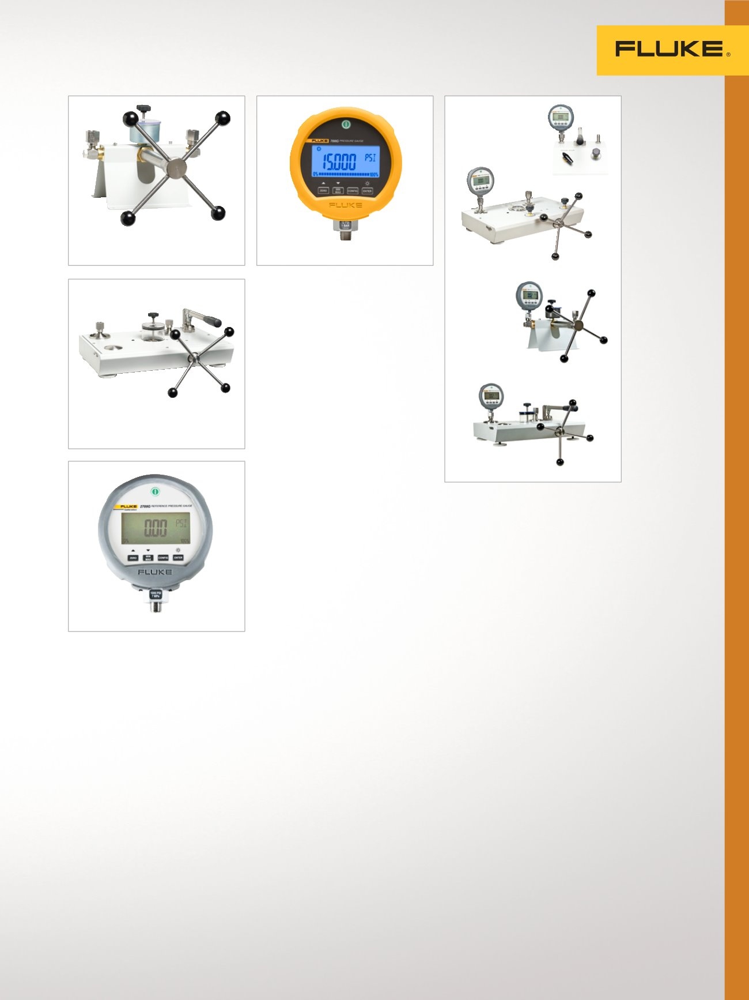

13
Étalonnage de pression
P5515
P5514
P5513
P5510
2700G
700G
Comparateur de pression
hydraulique P5515
Génération et contrôle précis
et de haute qualité de
pression hydraulique.
•
Génération et réglage précis de
pression jusqu'à 140 MPa (20 k psi)
•
Pompe manuelle intégrée pour
l'amorçage du système et les
applications à grande capacité
•
Compatible avec une large gamme
de liquides
Étalonneur de manomètre de
précision 700G
Conception robuste pour des
mesures de terrain fiables.
•
23 plages de 10 inH2O/1 bar à
10 000 psi/690 bar et 0,065 %
de précision
•
Combiné avec un kit de comparai-
son pour compléter la solution
•
Quatre nouvelles plages de
mesure de pression absolue
•
Utilisez le logiciel 700G/TRACK
pour télécharger plus de 8 000
mesures de pression enregistrées
•
Jusqu'à 1 500 heures d'autonomie
•
I.S., CSA, classe 1, div. 2, groupe
A-D, ATEX :II 3 G EX na IIB T6
•
Étalonnage identifiable NIST
Manomètre de référence
série 2700G
La meilleure précision provenant
d'un manomètre de référence.
•
Mesure de pression de précision à
partir de 100 kPa (15 psi) jusqu’à
70 MPa (10 000 psi).
•
Précision de ±0,02 % à
pleine échelle
•
Combiné avec le comparateur
de pression P55XX pour une
solution complète d'étalonnage de
pression d'établi
•
Les modèles /C incluent
l'étalonnage agréé
Comparateurs de
pression et calibres
de référence
Génération précise de
pression pour comparer un
dispositif sous test avec un
calibre de référence.
Comparaison de pression
de gaz P5510
Génération facile et efficace
de pression et de vide en un
seul appareil.
•
Pression jusqu'à 2 MPa (300 psi)
•
Vide jusqu'à -80 kPa (-12 psi)
Comparaison de pression
de gaz P5513
Génération et contrôle précis et de
haute qualité de pression de gaz.
•
Réglage précis de la pression
jusqu'à 210 MPa (3 kpsi) grâce
aux valves à aiguille de
haute qualité
•
Presse à vis intégrée pour un
réglage précis de la pression
•
Pompe à vide/pression en
option, -80 kPa à 2 MPa
(-12 psi à 300 psi)
Comparateur de pression
hydraulique P5514
Génération facile et efficace de
pression hydraulique.
•
Génère et ajuste avec précision la
pression à 70 MPa (10 kpsi)
•
Compatible avec une large
gamme de liquides